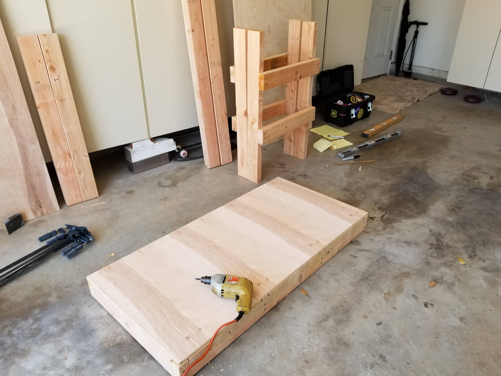
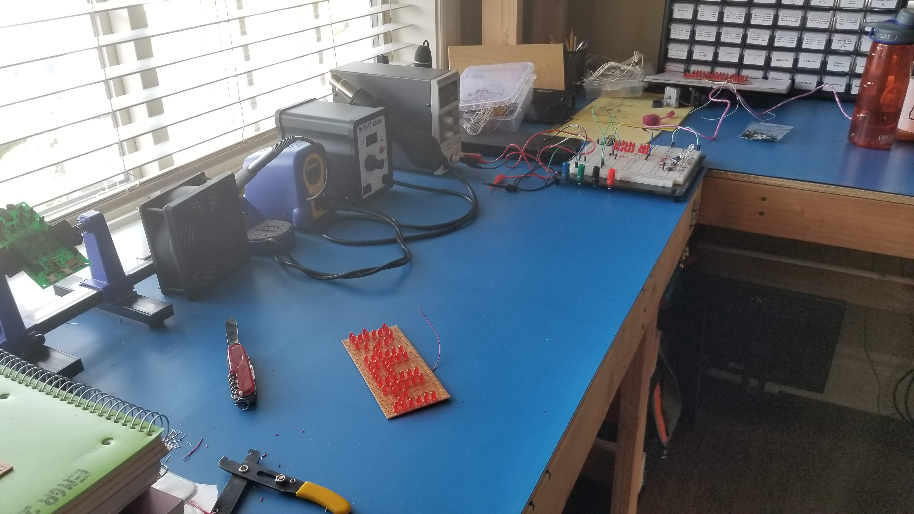
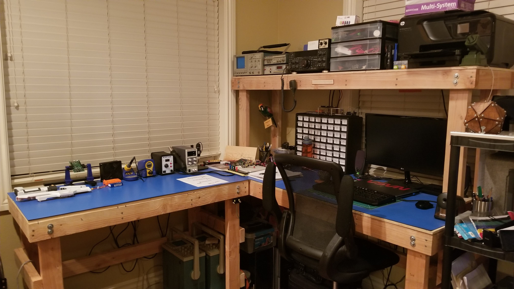

This project was inevitable. If I was going to sustain larger projects in the future, I was going to need a workbench to carry my tools, equipment and provide an electro-static dissipative (ESD) space to work on sensitive electronics. Work began to create my own electronics workbench from scratch, first thing to go over was materials.
The table tops are made from 1/4” Birch Plywood and the support legs and frame are made from Douglas Fir 2x4’s (Oregon’s State Tree!). The frames are put together with 1.25” phillip wood screws and the table tops are secured to the legs with 3/8” Hex Nuts and Bolts (two on each contact point). Materials and general idea sorted out it was time to think of design.
When it came time to think about the design, I was certainly inspired by designs seen around the internet when searching for ‘electronics workbench’. I knew I wanted to have a large, large, large area to work with and a shelf to place test equipment on (Oscilloscope, Function Generator, Bench Meter). For determining the dimension, it was up to my prized possession Tektronix TAS-455 Analog Oscilloscope since that was going up on the shelf and has the most length to it. The scope measured 1’6” in length so the shelf would have that width. For the length of the shelf and the bench in general, I looked at the standard sizes for plywood that could be purchased at my local Home Depot. 4’x8’ pieces of Birch Plywood seemed to be the standard. The plan was then to use the rest of the plywood for a table top. A 1’6” piece would be taken off, giving a shelf dimension of is 6’x1’6”x1/4". The remaining plywood could then be entirely used up if it was split into two tables, one with the shelf and measuring 6’ wide and another that is 4’ wide that could be used specifically for soldering/reflow work. Rigid frames constructed from 2x4s support the table giving a bulky and very large workspace, such fun!
Materials were purchased, and construction began. With plans drawn out the table was finished a few hours later. Next came the fun part, ESD mats and adding an Earth Ground Plug. I was able to get an 8’ roll of a dual layer rubber ESD mat on Amazon to lay out on the bench and it came with a Ground plug and bracelet! How convenient. The plug was secure to the right side of the smaller table, directly under the tables overhang, it fit under the 2x4 frame rather well.
With that the table was put in place in my apartment and populated with my equipment and turned out looking exactly as imagined. It has a very rough look to it, mostly on account of it being made of 2x4s but I like it and it should last me many years. The Oscilloscope was placed up on its new throne along with the function generator, bench meter, and transceiver (Transceiver is explained in my HAM radio set-up).

Overall, this was a fun build with a clear practical purpose. Happy it turned out the way it did and thank you for reading!
Here's the Bill Of Materials for this project
| BOM Item # | Item Name | Quantity | Price/Unit | Total Cost |
|---|---|---|---|---|
| 1 | Birch Plywood 4'x8' | 1 | $40.00 | |
| 2 | Douglas Fir 2x4 8' | 10 | $6.00 | |
| 3 | Phillips Wood Screws (Box) | 1 | $4.50 | |
| 4 | 3/8" Hex Nuts/Bolt | 12 | $2.50 | |
| 5 | ESD Mat/Ground Plug | 1 | $80.00 | |
| $214.50 |